目次
エクスポートの手順
実行ファイルを作成することをGodotではエクスポートと呼びます。PC用の実行ファイルを作成してみましょう。
- プロジェクトメニューからエクスポートを選択します
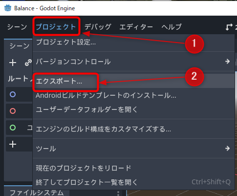
- 追加ボタンをクリックすると、エクスポートできるプラットフォームが表示されます。最初なのでPCのOSを選択するとよいでしょう。ここではWindows Desktopを選択しています
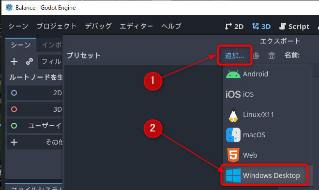
- エクスポートするためのテンプレートが必要なのでダウンロードします。ダイアログ下にあるエクスポートテンプレートの管理をクリックします。見つからない場合はGodotエディターを広げてください
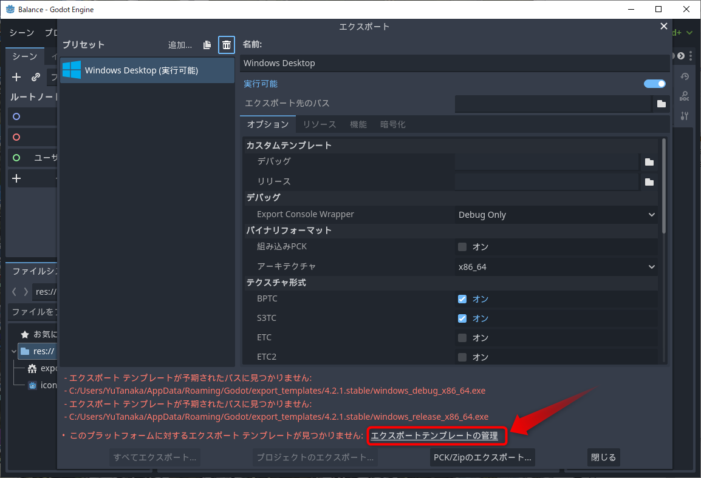
- ダウンロードしてインストールボタンをクリックします
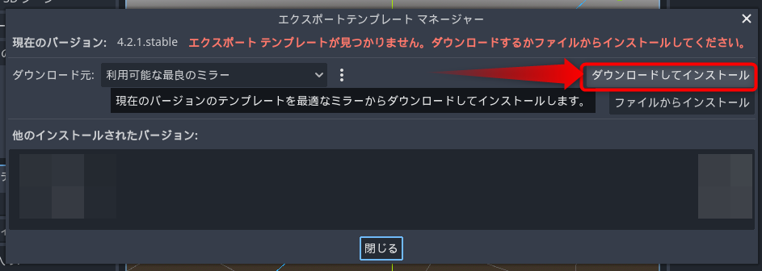
- ダウンロードが完了するのを待って、閉じるをクリックします
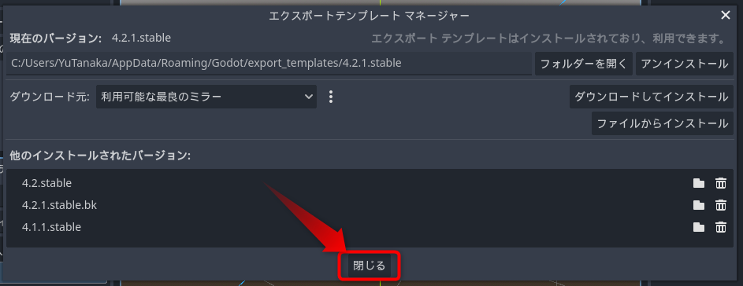
- もう一度、プロジェクトメニューからエクスポートを選択すると、エラーが消えています。エクスポート先のパスの右のフォルダーアイコンをクリックします
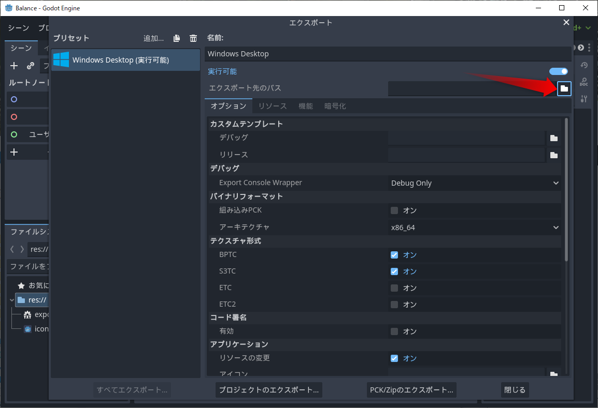
- フォルダーを作成をクリックして、
exportsなどの名前のフォルダーを作成して、OKをクリックします
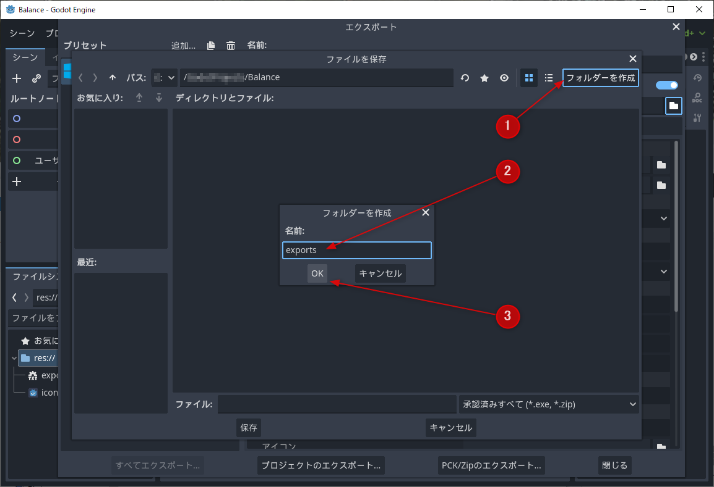
- 実行ファイル名を
balanceにして、保存ボタンをクリックします
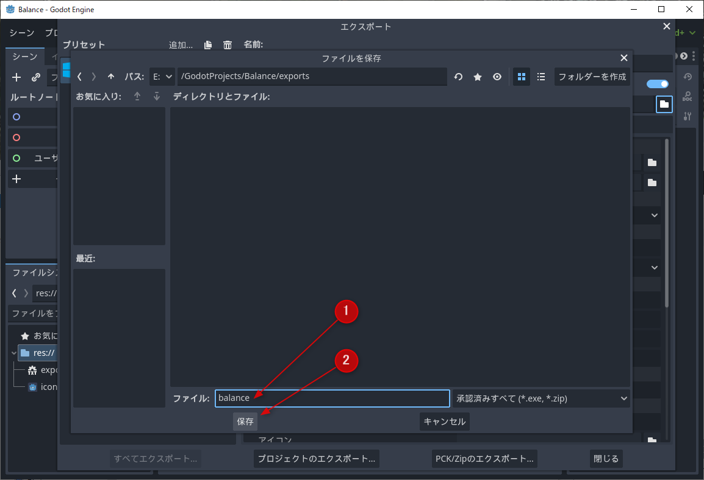
- プロジェクトのエクスポートボタンをクリックして、続けて保存ボタンをクリックします
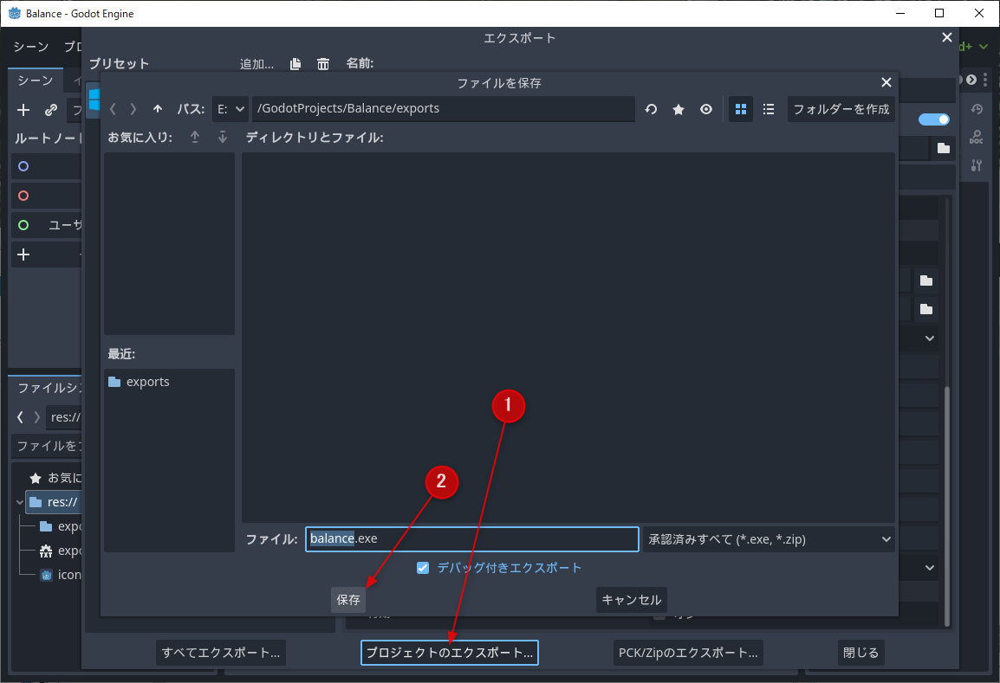
以上で実行ファイルのエクスポートが完了です。エクスポートウィンドウを閉じます。
エクスポートした実行ファイルを動かす
エクスポートした実行ファイルを動かしてみます。
- ファイルシステムのexportsフォルダーを右クリックして、ファイルマネージャーで開くをクリックします
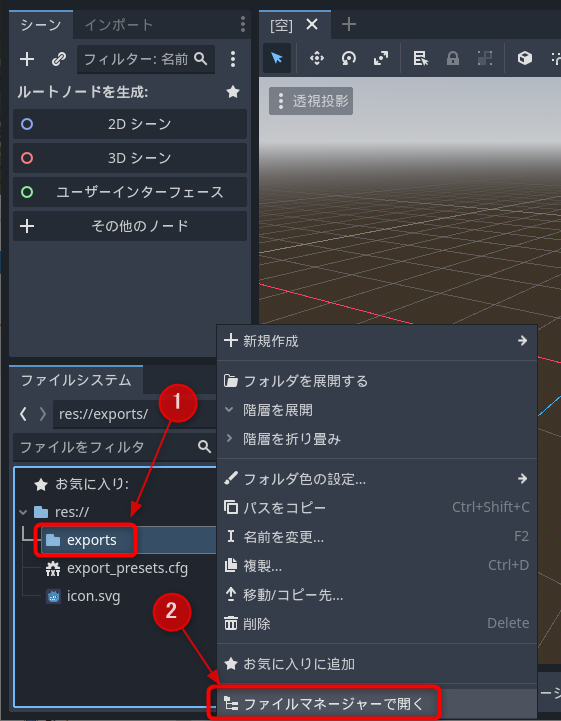
exportsフォルダーが見当たらない場合は変更が更新されていない状態です。Godotエディターで何かしていると、そのうち表示されると思います。
- フォルダーが開いたら、エクスポートしたファイル名の実行ファイルをダブルクリックして起動します
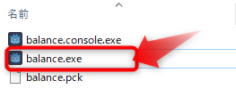
作成したゲームがはじまればエクスポート成功です。
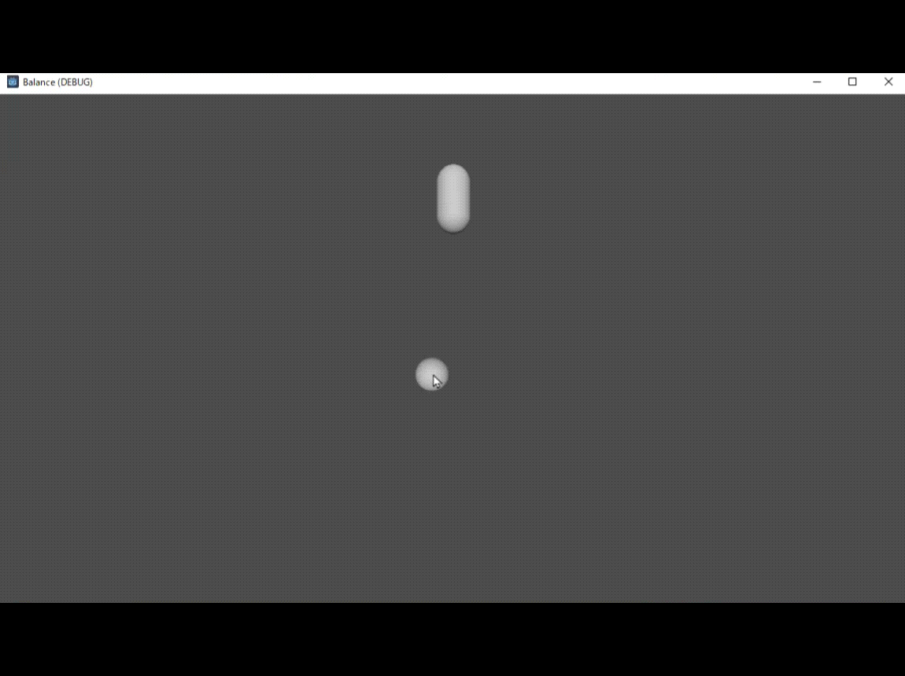
このフォルダーをまとめてコピーすれば、他のPCでも実行できます。
まとめ
製品用にビルドしたり、アイコンを設定するには他にもあれこれ設定があります。その段階になったら公式マニュアルでビルド方法の詳細を確認してください。